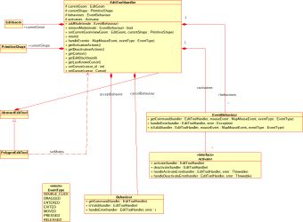
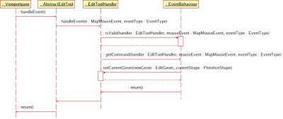

Edit Tools
Edit Tools ---- UNDER CONSTRUCTION ----
Edit tools are another sub-type of tools, however they do not (yet) have their own extension point. Instead they are extensions of the net.refractions.udig.project.ui.tool extension point. Because there are a large number of editing tools that can be created an many of them have similar functionality there is a little framework associated with edit tools development.
Summary of Edit Tool Framework
The central classes in the editing framework are the AbstractEditTool, EditToolHandler, EditBlackboard, EventBehaviour, and Activator classes.
- AbstractEditTool - The super class of all Edit tools that use this framework. The AbstractEditTool has little functionality beyond configuring the EditToolHandler object upon creation.
- EditToolHandler - The Edit tool handler is composed of EventBehaviours, Activators and AcceptBehaviours.
- The EditToolHandler accepts mouse and keyboard events from the AbstractEditTool and delegates the events to "EventBehaviour* objects that are valid for the type of event. All EventBehaviour objects that are valid will have the commands returned by their getCommand() method to the map's commandStack for execution.
- Activators are ran when the tool is activated and deactivated.
- AcceptBehaviours are ran when the tool is deactived, when a behaviour requests that the current changes be accepted or when the user presses Enter key.
- The EditToolHandler has a locking mechanism so that a group of EventBehaviours can lock out other potentially valid behaviours. For example a move vertex behaviour (Valid during drag events) may wish to lock the handler so that the SelectVertexBox behaviour (Also valid during drag events).
- The current geometry and shape (shell or hole) being edited can be accessed throught the EditToolHandler
- An object called the MouseTracker can be accessed via the EditToolHandler
- The current edit state can be accessed via the EditToolHandler. The possible edit states are listed in the enum EditState.
- EditBlackboard - Provides methods for efficiently editing geometries.
- Geometries can be added to the blackboard and vertices can be added, removed and moved by making requests to the EditBlackboard. When a Geometry is added to the EditBlackboard it is converted into one or more EditGeom objects. All editing is done in terms of pixels, the EditBlackboard will transparently perform a requested operation on all coordinates mapping to the pixel(s) and will handle all the transformations required.
- The EditBlackboard also has a Selection which is a selection of points and Coordinates at that point. When the Selection is obtained it is a snap shot of the selection at that point in time. If a reference is maintained to a selection and a point is added to the selection via the methods on the EditBlackboard the referenced Selection will not change. HOWEVER, if a point is moved on the EditBlackboard the selection will be updated to reflect the move. Similarly, if a point is removed from the EditBlackboard the point (and all associated coordinates) will be removed from the selection. It is important to not keep references to Selections any longer than necessary because Selections will receive events as long as they are referenced. The EditBlackboard's list of listeners are weak references so all that needs to be done to remove a listener from the EditBlackboard is to remove all references to the object. That is also a warning. If an object is listening to the EditBlackboard it is important to keep a reference to the listener.
- The EditBlackboard can be useful for implementing coverage-like editing. If two geometries are added to the EditBlackboard that share an edge; edits moving one of the shared vertices will automatically move the coordinates in both geometries.
- EventBehaviour - Actions that occur when events are raised by the mouse or keyboard. All EventBehaviours have an isValid() method that is called to determine whether or not the behaviour is valid given the current state of the EditTooHandler and the type of event that occurred. If the EventBehaviour is valid then the getCommand() method will be called by the EditToolHandler and executed by the current map's command manager. Since both isValid() and getCommand() are executed in the display thread the amount of work they do must be very quickly executed so as to not impact the user interaction.
Class Diagram of Edit Tool frame work

Interaction Diagram of a Mouse Released Event

(c) Copyright (c) 2004-2008 Refractions Research Inc. and others.
[wiki]
{kind=link}
{kind=link}